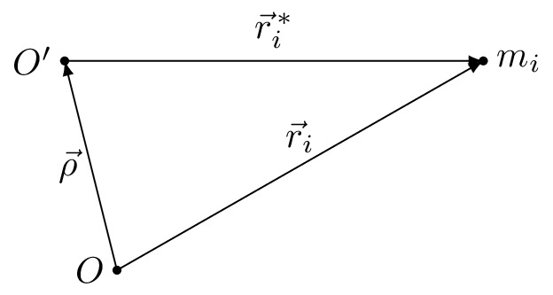

pre.tex
\documentclass[tikz]{standalone}\input{pre.tex}\begin{document}\begin{tikzpicture}
\coordinate (A) at (0,0);
\coordinate (B) at (0.5,-2);
\coordinate (C) at (4,0);
\draw[fill=black] (C) circle (1pt) node [right] {$m_i$};
\draw[fill=black] (0,0) circle (1pt) node[left] {$O'$};
\draw[fill=black] (0.5,-2) circle (1pt) node[left] {$O$};
\draw[->, >=latex] (A) -- node [above] {$\vec{r}\zi$} (C);
\draw[->, >=latex] (B) -- node [above] {$\vec{r}_i$} (C);
\draw[->, >=latex] (B) -- node [left] {$\vec{\rho}$} (A);
\end{tikzpicture}\end{document}